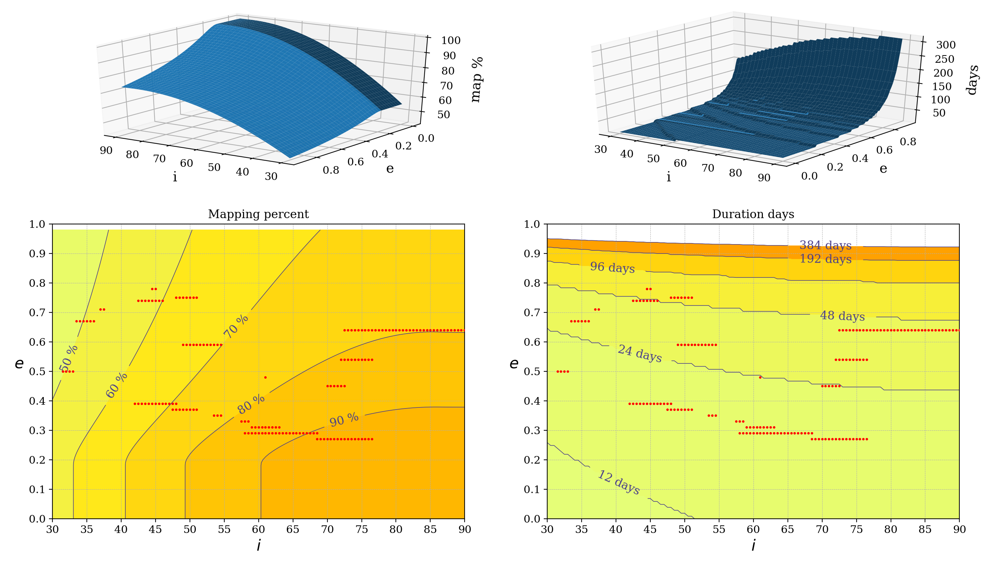

Entry 20¶
Selecting orbital parameters for mapping the surfaces of Pluto and its moon Charon¶
Alejandro Daniel Noel (1 author)
This is part of a study for sending an orbiter mission to the Pluto-Charon system (a challenge originally proposed by the AIAA). This planetary system is at the verge of the outer solar system. Only three years ago the fly-by mission New Horizons took the first high resolution images of this thrilling formation. The data showed a planet much more active than the scientific community expected and, as is customary in space exploration, the nexts steps are sending an orbiter to spend more time taking measurements.
This tool has been developed to select the best orbits around Pluto and Charon such that the spacecraft can map the largest possible surface area in the smallest amount of time. In the resulting plot the orbits that result in homogeneously spaced ground-tracks that have little to no overlap are represented by red dots (calculated analytically). Other orbits may result in ground-tracks with too much overlap or incomplete coverage and thus must be avoided. The x-axis indicates the inclination of the orbit with respect to Pluto’s equator and the y-axis indicates the eccentricity. The radius at the periapsis is an input. The solution space is represented with contour plots of both the percent of the astronomical bodies being covered by the camera and the duration of the entire mapping process.
These plots are extremely helpful for making informed selections based on mission requirements and payload limitations. The results have been verified using a high-fidelity orbit propagator and proven accurate for eccentricities below 0.5. This is due to the gravitational interaction between Pluto and Charon, which eventually turn unstable nearly any orbit in this system.
In the code, it is easy to change which body is being analysed, with the current options being Pluto, Charon and Earth (this last one for verification purposes). This can be selected in line 204.
Code and data: 1